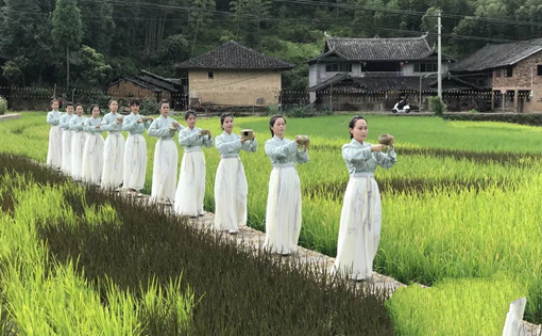
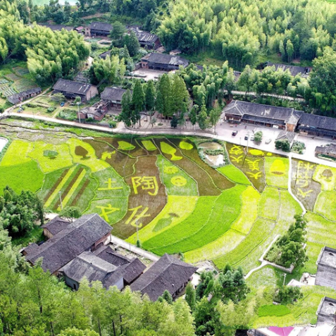

来源：泰顺新闻网讯
发布时间：2018-07-30 16:23:00 作者：施双双
 近段时间，大安乡柳埠村的连片农田、大丘坪村的彩色水稻吸引了大批摄影爱好者前来拍摄，其中土陶文化村美丽田园还登上了温州日报头版和《温州文创》杂志，农旅结合初步展现出了生命力和带动力。
大安乡地势平坦，素有“小平原”之称。今年以来，乡党委、政府统一思想，将特色农业、非遗文化作为景观资源，制定了美丽田园建设计划，从基础设施建设到旅游宣传推广进行全方位扶持。在科技特派员的精心指导下，干部群众齐上阵，全力打造“农旅融合，乡村振兴”美丽田园项目,同时借助旅游的传播力提高农业品牌影响力，勾勒出大安旅游的美丽田园画卷。
大安乡地势平坦，素有“小平原”之称。今年以来，乡党委、政府统一思想，将特色农业、非遗文化作为景观资源，制定了美丽田园建设计划，从基础设施建设到旅游宣传推广进行全方位扶持。在科技特派员的精心指导下，干部群众齐上阵，全力打造“农旅融合，乡村振兴”美丽田园项目,同时借助旅游的传播力提高农业品牌影响力，勾勒出大安旅游的美丽田园画卷。下一步，大安乡将继续通过农旅融合的方式，打造一批美丽、清洁、独特的乡村田园，助推大美大安建设。